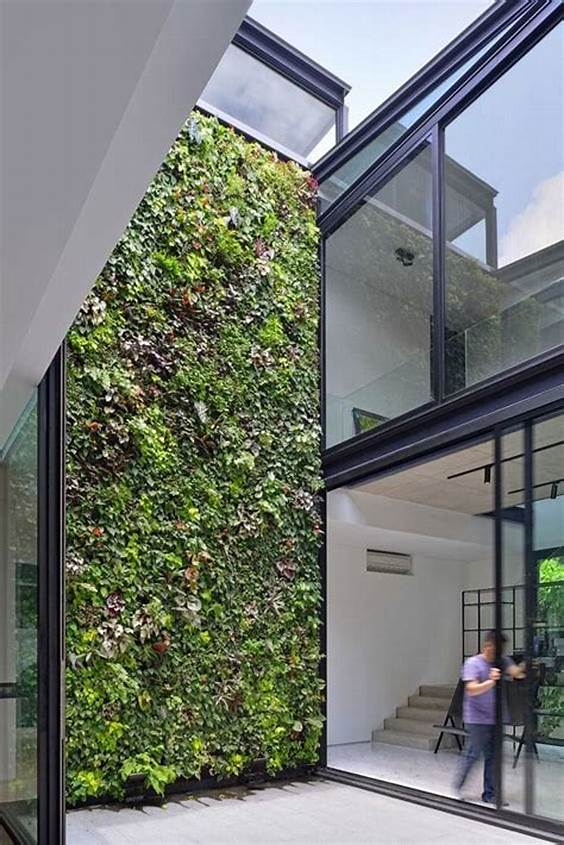

Beneficios de los Jardines Acústicos Verticales
Inicio
Beneficios
Implementación
Contacto
Ventajas de instalar un jardín acústico
Reducción del ruido en áreas urbanas
Mejor calidad del aire
Incremento del valor estético y funcional de los espacios
Aislamiento térmico para edificaciones
